Woven wood 30 fabrics · 6 families
 GrassclothSoft Cream
GrassclothSoft CreamB1604Woven · liner optional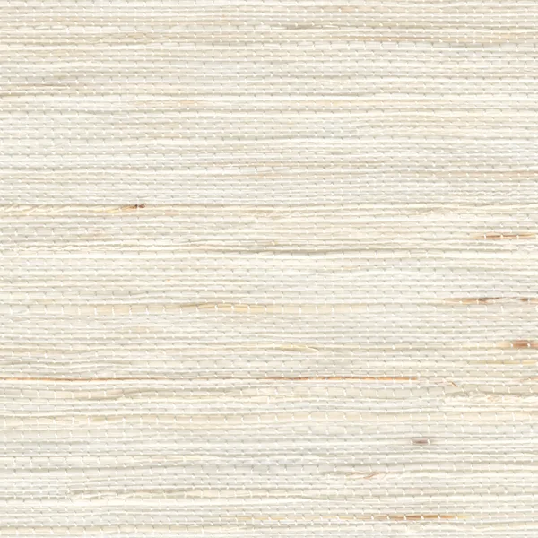
GrassclothLight IvoryB1609Woven · liner optional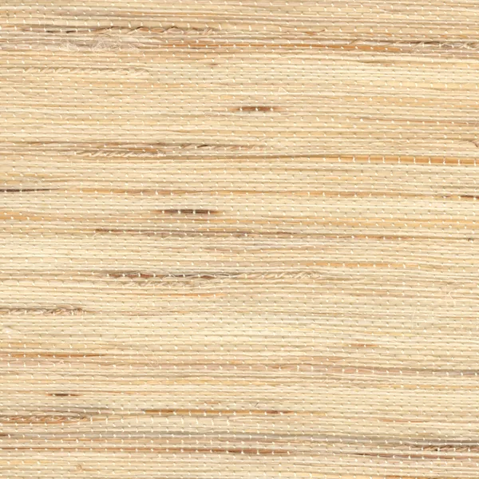
GrassclothSoft WheatC1605Woven · liner optional GrassclothLight Ash
GrassclothLight AshA1606Woven · liner optional GrassclothWarm Tan
GrassclothWarm TanA1605Woven · liner optional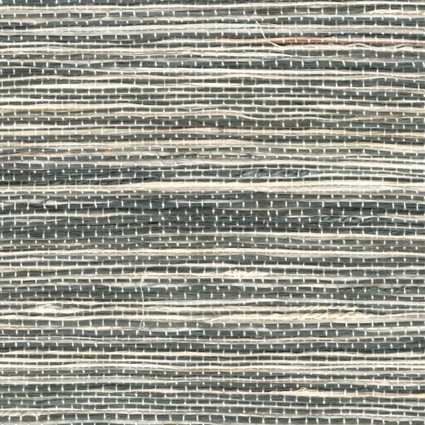
GrassclothCharcoalA1607Woven · liner optional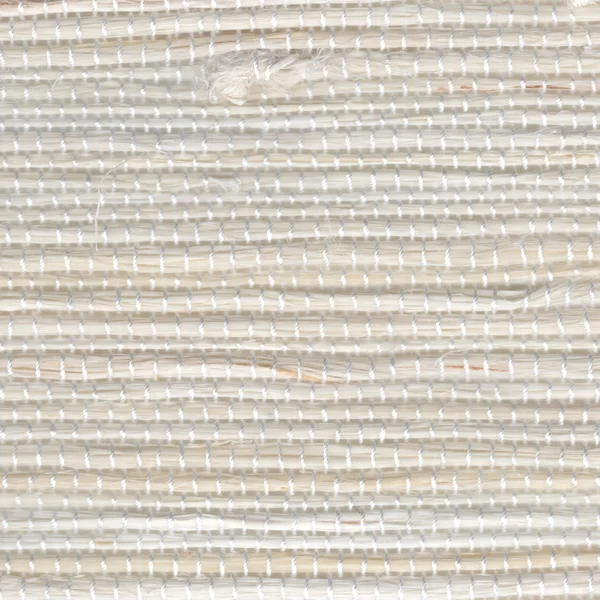
Natural JutePale IvoryB1616Woven · liner optional Natural JuteCreamy White
Natural JuteCreamy WhiteC1610Woven · liner optional Natural JuteWarm Oat
Natural JuteWarm OatB1616-1Woven · liner optional Natural JuteNatural Straw
Natural JuteNatural StrawF1608Woven · liner optional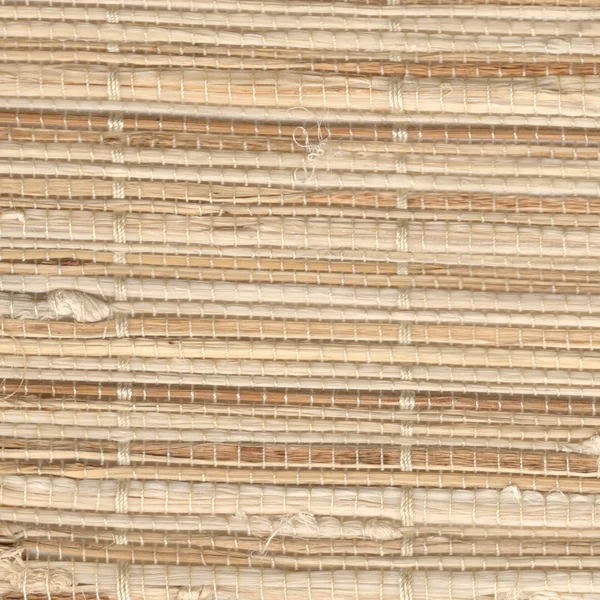
Natural JuteNatural HempF1605Woven · liner optional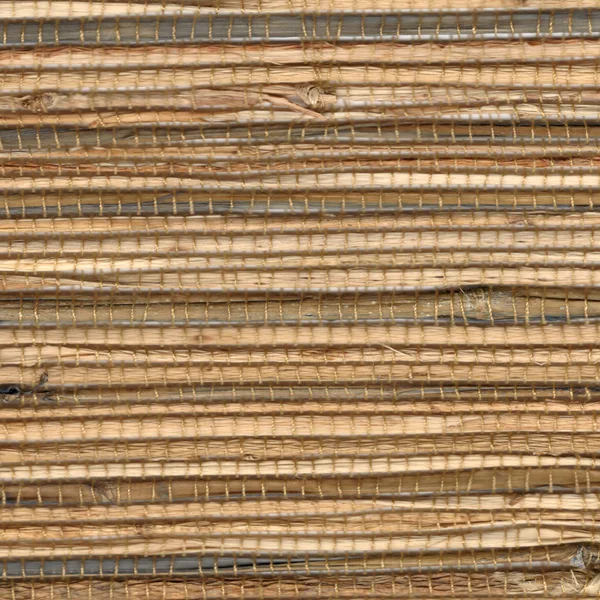
Natural JuteMixed StripeF1609Woven · liner optional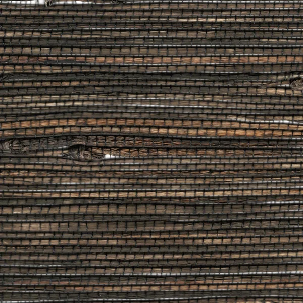
Natural JuteDark AshF1639Woven · liner optional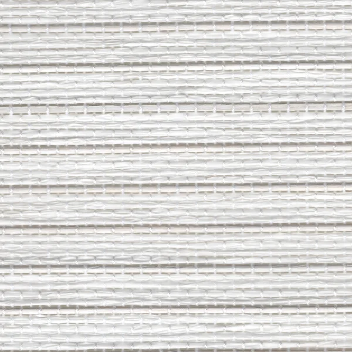
ReedWhite ReedZ2501Woven · liner optional ReedStraw White
ReedStraw WhiteB1601Woven · liner optional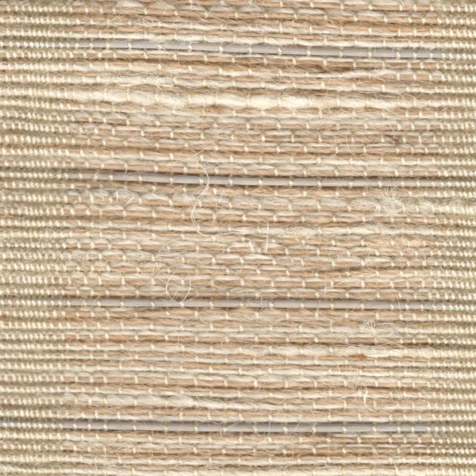
ReedLight BeigeG1605Woven · liner optional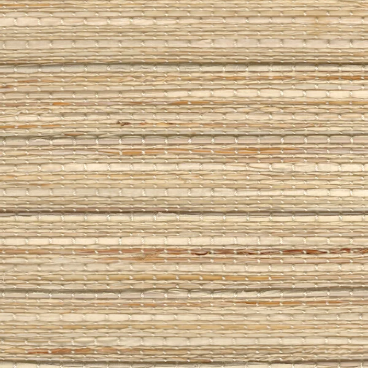
ReedRaw HayZ2504Woven · liner optional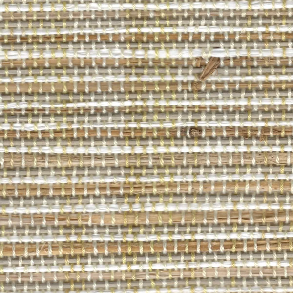
ReedBright StrawZ2001Woven · liner optional ReedHoney
ReedHoneyC1801Woven · liner optional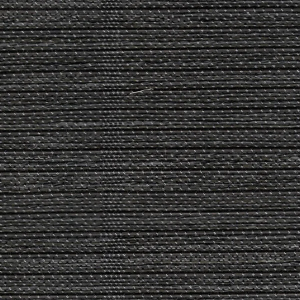
ReedEbonyZ2503Woven · liner optional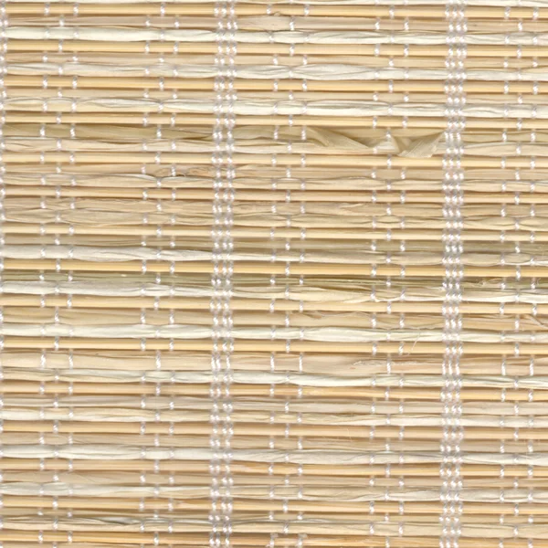
BambooStraw BeigeF1640Woven · liner optional BambooLinen Stripe
BambooLinen StripeF1612Woven · liner optional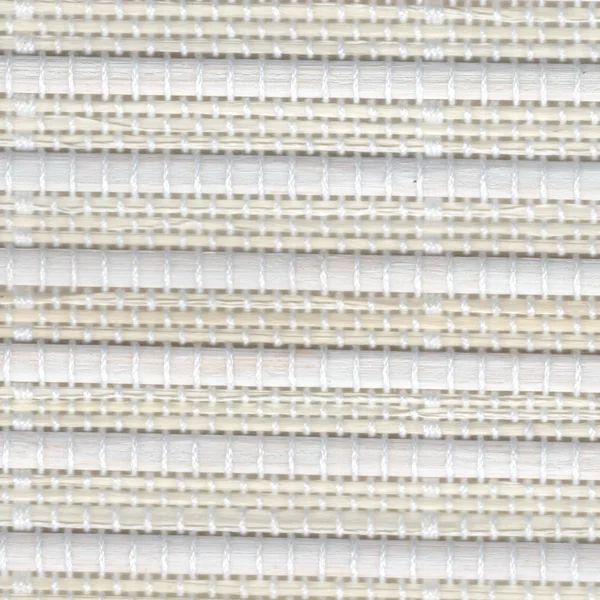
LatticeBright WhiteCY-D-141Woven · liner optional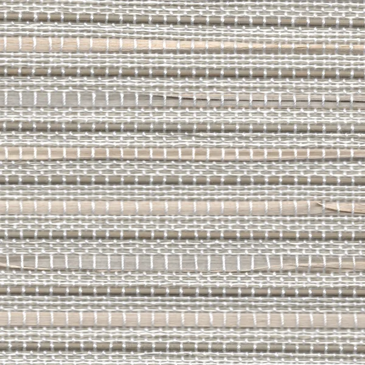
LatticePale GreyCY-D-140Woven · liner optional LatticeBeige Stripe
LatticeBeige StripeCY-D-139Woven · liner optional LatticeGrey Stripe
LatticeGrey StripeC1604Woven · liner optional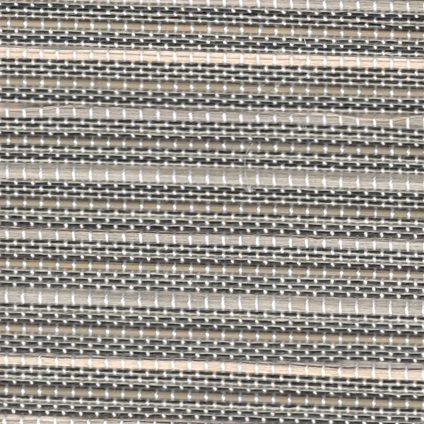
LatticeNeutral StripeCY-D-146Woven · liner optional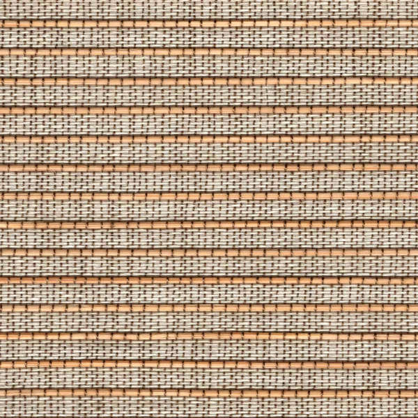
Textured LinenDuneE1617Woven · liner optional Textured LinenClay
Textured LinenClayE1610-1Woven · liner optional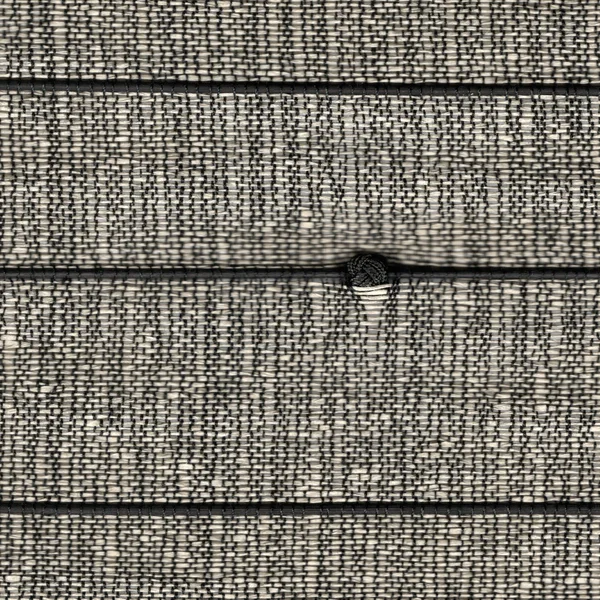
Textured LinenMoss GreyE1603-4Woven · liner optional Canvas
Canvas Tweed
Tweed Drift
Drift